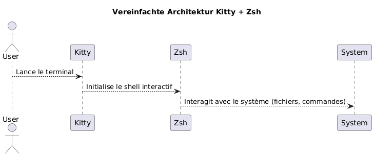
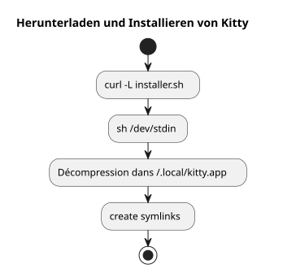
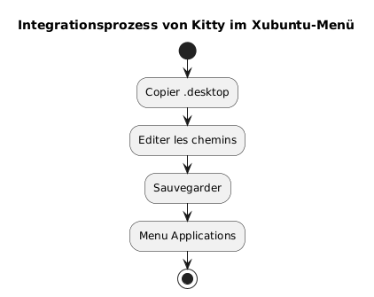
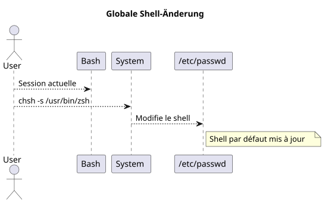
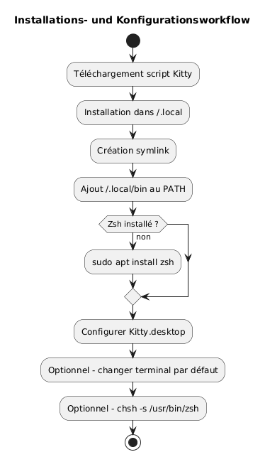
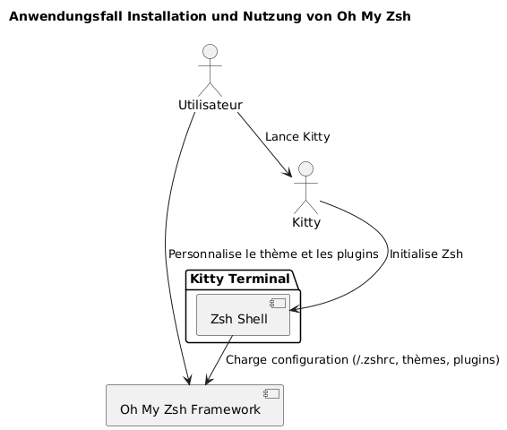
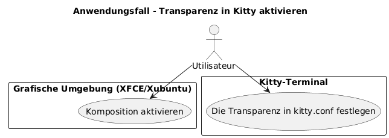
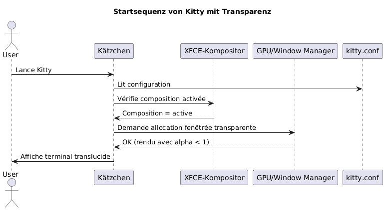

Installiere das Kitty‑Terminal und konfiguriere Zsh als Standard‑Shell unter Xubuntu
Publié le 07 May 2026 Mis à jour le 2026-05-07
- Warum Kitty und Zsh wählen?
- Systemvoraussetzungen
- Download und Installation von Kitty
- Integration von Kitty in Xubuntu
- Installation von Zsh
- Definiere Zsh als Standard-Shell
- Zsh-Konfiguration (optional)
- Zusammenfassung des vollständigen Workflows
- Finale Überprüfung
- Installation und Konfiguration von Oh My Zsh
- Transluzidität in Kitty aktivieren
- Piepton deaktivieren (audible bell)
- Update von Kitty
- Referenzen
- Fazit
Dieser Leitfaden erklärt Schritt für Schritt, wie man das Terminal kitty auf Xubuntu installiert, es korrekt konfiguriert und bash durch zsh als Standard-Shell ersetzt. Das Projekt kitty ist hier verfügbar: https://github.com/kovidgoyal/kitty.
_ Kitty ist ein modernes, schnelles und konfigurierbares Terminal, das besonders für anspruchsvolle Entwickler geeignet ist. _
Warum Kitty und Zsh wählen?
Kitty zeichnet sich durch:
-
Überlegene Leistung dank GPU-Beschleunigung,
-
Eine vollständig auf einer einzelnen Textdatei basierende Konfiguration,
-
Eine ausgezeichnete Unterstützung für Schriftarten und Ligaturen.
Zsh ist hingegen eine leistungsfähige interaktive Shell, die bietet:
-
Intelligente Vervollständigung,
-
Ein anpassbarer Prompt,
-
Eine große Kompatibilität mit bash.
Durch die Kombination von Kitty und Zsh profitieren Sie von einer produktiven und ästhetischen Umgebung.

|
Dieser Leitfaden ist absichtlich auf die Installation per Skript und auf Xubuntu beschränkt. |
Systemvoraussetzungen
Bevor du anfängst, stelle sicher, dass du:
-
Xubuntu installiert,
-
ein Internetzugang,
-
eine funktionelle Bash-Shell zum Ausführen des Skripts
Überprüfen Sie Ihre Umgebung :
uname -a
lsb_release -aDownload und Installation von Kitty
Kitty empfiehlt, es über ein offizielles Skript zu installieren, das die Dateien in`~/.local/kitty.app`.
|
Diese Methode ist unabhängig von Paketmanagern (keine`apt`). |
Lade das Installationsskript herunter
Führen Sie den folgenden Befehl aus:
curl -L https://sw.kovidgoyal.net/kitty/installer.sh | sh /dev/stdinDieser Befehl führt aus:
-
Herunterladen der Binaries,
-
Extraktion in`~/.local/kitty.app`,
-
Erstellung der symbolischen Links.

Erstellung der symbolischen Links
Um aufrufen zu können`kitty`Erstellen Sie im Terminal einen symbolischen Link :
ln -s ~/.local/kitty.app/bin/kitty ~/.local/bin/kittyFügen Sie hinzu`~/.local/bin`Füge zu deinem PATH hinzu, falls noch nicht geschehen:
echo 'export PATH="$HOME/.local/bin:$PATH"' >> ~/.zshrc
source ~/.zshrcSie können die Installation überprüfen:
kitty --versionIntegration von Kitty in Xubuntu
Damit Kitty im Anwendungsmenü erscheint:
die Desktop-Datei kopieren
Kopieren Sie die Datei`.desktop`bereitgestellt :
cp ~/.local/kitty.app/share/applications/kitty.desktop ~/.local/share/applications/Bearbeite die Desktop-Datei
Bearbeite die Datei:
nano ~/.local/share/applications/kitty.desktopÜberprüfen oder ändern Sie die folgenden Zeilen:
[Desktop Entry]
Version=1.0
Type=Application
Name=Kitty Terminal
Comment=Fast GPU-based terminal emulator
Exec=/home/$USER/.local/kitty.app/bin/kitty
Icon=kitty
Categories=System;TerminalEmulator;Ersetzen`YOURUSER`durch deinen Benutzernamen.

Kitty als Standardterminal zuordnen (optional)
Damit Kitty das Terminal ist, das standardmäßig gestartet wird:
sudo update-alternatives --install /usr/bin/x-terminal-emulator x-terminal-emulator ~/.local/kitty.app/bin/kitty 50
sudo update-alternatives --config x-terminal-emulatorAuswählen`kitty`im angebotenen Menü
Installation von Zsh
Falls Zsh noch nicht installiert ist, führen Sie aus:
sudo apt install zshÜberprüfen Sie die Installation:
zsh --versionDefiniere Zsh als Standard-Shell
Sie können Ihre Shell systemweit ändern oder nur in Kitty.
Globale Methode (für alle Terminals)
Identifizieren Sie den absoluten Pfad:
which zshIm Allgemeinen`/usr/bin/zsh`.
Ändern Sie die Standard-Shell:
chsh -s /usr/bin/zshMelden Sie sich ab und melden Sie sich erneut an.

Kitty-spezifische Methode
Wenn Sie nur die Shell in Kitty ändern möchten, bearbeiten Sie die Konfigurationsdatei:
nano ~/.config/kitty/kitty.confFügen Sie diese Zeile hinzu:
shell zshSpeichern und Kitty neu starten.
Zsh-Konfiguration (optional)
Um Ihr Zsh anzupassen:
Eine Datei .zshrc erstellen
touch ~/.zshrc
nano ~/.zshrcBeispiel einer minimalen Konfiguration
export ZSH_THEME="robbyrussell"
export PATH="$HOME/.local/bin:$PATH"
alias ll="ls -la"Zusammenfassung des vollständigen Workflows
Der untenstehende Plan fasst den gesamten Prozess zusammen:

Finale Überprüfung
Starte Kitty :
kittyDu solltest sehen, dass`zsh`ist aktiv :
echo $SHELLErwartetes Ergebnis :
/usr/bin/zsh
Um die Schriftgröße inKätzchen, man muss den Parameter anpassen`font_size`in der Konfigurationsdatei. Hier ist die detaillierte Vorgehensweise:
📂 Öffne die Konfigurationsdatei
Die Hauptkonfigurationsdatei befindet sich gewöhnlich in:
~/.config/kitty/kitty.confWenn diese Datei noch nicht existiert, können Sie sie erstellen. Beispiel:
nano ~/.config/kitty/kitty.conf�🖋️ Hinzufügen oder ändern `font_size
Fügen Sie die folgende Direktive hinzu, oder ändern Sie sie, falls sie bereits existiert :
font_size 14.0Hier`14.0`Entspricht der gewünschten Größe. Sie können jeden Dezimalwert eingeben, zum Beispiel`12.0`, 15.5,etc.
�💾 Speichern und Kitty neu starten
-
Speichern (
Ctrl + O, dann`Entrée`) und verlassen Sie (Ctrl + X) wenn Sie verwenden`nano`. -
Schließe alle Kitty-Fenster und starte das Terminal neu, damit die Änderung wirksam wird.
�✅ Dynamische Anpassung (Temporärer Zoom)
Wenn du temporär hinein-/herauszoomen möchtest, ohne die Einstellungen zu ändern, verwende die Standard-Tastenkombinationen:
-
Schriftgröße erhöhen:
Ctrl + Shift + =
-
Schriftgröße verringern:
Ctrl + Shift + -
-
Größe zurücksetzen:
Ctrl + Shift + Backspace
Diese Einstellungen bleiben nach dem Schließen des Terminals nicht erhalten.
Installation und Konfiguration von Oh My Zsh
Nachdem Zsh installiert und als Standard-Shell konfiguriert ist, kannst du deine Umgebung mit Oh My Zsh erweitern, einem Framework zur Verwaltung der Zsh-Konfiguration, das bietet:
-
Eine Sammlung von Themen für den Prompt,
-
viele Plugins
-
Eine klare Organisation der Konfiguration.
Installation von Oh My Zsh
Stellen Sie sicher, dass Zsh aktiv ist:
zsh --versionWenn notwendig, starten Sie :
zshDann lade das offizielle Installationsskript herunter und führe es aus:
sh -c "$(curl -fsSL https://raw.githubusercontent.com/ohmyzsh/ohmyzsh/master/tools/install.sh)"Dieses Skript:
-
Erstelle den Ordner`~/.oh-my-zsh`,
-
Speichert eventuell Ihre Datei`~/.zshrc`,
-
aktiviert automatisch den neuen Prompt.
Das Thema ändern
Öffnen Sie Ihre Konfigurationsdatei:
nano ~/.zshrcÄndern Sie die Variable`ZSH_THEME`um ein anderes Thema zu wählen (zum Beispiel`agnoster`) :
ZSH_THEME="agnoster
Speichern Sie und laden Sie dann die Konfiguration neu:
source ~/.zshrcÜberprüfung
Starten Sie Kitty und überprüfen Sie, dass der Prompt sich geändert hat. Sie können bestätigen, dass Oh My Zsh aktiv ist durch das Ausführen:
echo $ZSHDas Ergebnis sollte ähnlich sein:
/home/dein_benutzer/.oh-my-zsh
Use-Case-Diagramm

Transluzidität in Kitty aktivieren
Eine der am meisten geschätzten Funktionen von Kitty ist die Möglichkeit, Transparenz dem Terminal-Hintergrund hinzuzufügen. Dadurch lässt sich das darunterliegende Umfeld (Fenster, Desktop usw.) leicht erkennen, was besonders beim Multitasking nützlich ist.
Voraussetzungen für die Transparenz
Die Transparenz in Kitty beruht auf demFensterkomponistvon der grafischen Umgebung verwendet Bei Xubuntu (basierend auf XFCE), stellen Sie sicher, dass dieKomposition ist aktiviert.
-
Rechtsklick auf den Desktop > Einstellungen >Einstellungen des Fenster-Managers,
-
RegisterkarteKomponist: das Kontrollkästchen "Komposition aktivieren" muss aktiviert sein.

Konfiguration der Transparenz in kitty.conf
Öffnen Sie Ihre Konfigurationsdatei`~/.config/kitty/kitty.conf` :
nano ~/.config/kitty/kitty.confFügen Sie die folgenden Zeilen hinzu oder ändern Sie sie:
background_opacity 0.85Dieser Parameter akzeptiert Werte zwischen:
-
1.0→ opaque (keine Transparenz), -
0.0→ vollständig transparent (nicht verwendbar) -
Zwischenwerte wie`0.90`,
0.75, etc.
Ein guter visueller Kompromiss ist in der Regel zwischen`0.85` et 0.95.
Kitty neustarten
Schließen Sie alle Instanzen von Kitty und starten Sie anschließend ein neues Fenster, damit die Änderungen wirksam werden:
kittyMögliche Ergänzungen
Wenn Sie einen benutzerdefinierten Terminalhintergrund verwenden, können Sie auch eine Hintergrundfarbe mit Transparenz (in RGBA) festlegen:
background #1e1e2effDie letzte Komponente (ff) gibt die Opazität an (von`00` à ff).
Sequenzdiagramm - Initialisierung von Kitty mit Transparenz

Bekannte Einschränkungen
|
Die Transluzenz funktioniert nicht, wenn: - der XFCE-Compositor ist deaktiviert, - ein inkompatibler Fenstermanager wird verwendet, - Sie verwenden Kitty im tmux-Modus im Hintergrund ohne Transparenzunterstützung. |
Piepton deaktivieren (audible bell)
Standardmäßig gibt Kitty einen bip-Ton aus, wenn eine fehlerhafte Eingabe gemacht wird oder ein Terminal-Ereignis es auslöst. Dieser Ton kann schnell lästig werden, besonders in einer intensiven Entwicklungsumgebung.
Um dieses Verhalten zu deaktivieren, füge die folgende Direktive zur Datei hinzu`~/.config/kitty/kitty.conf`:
audible_bell no|
Sie können auch eine visuelle Rückmeldung anstelle des Pieptons aktivieren mit: |
Update von Kitty
Da Kitty über ein Skript und nicht über einen Paketmanager installiert ist, erfolgt das Update durch erneutes Ausführen des offiziellen Installationsskripts. Dadurch kannst du die neueste Version herunterladen und deine bestehende Installation in`~/.local/kitty.app`.
|
Das Suffix`.app`im Weg`~/.local/kitty.app`ist die Installationskonvention von Kitty unter Linux über das offizielle Skript und gibt keinerlei Hinweis auf eine ausschließliche Kompatibilität mit macOS. |
|
Bevor du den Aktualisierungsbefehl startest, stelle sicher, dass du in deinem Home-Verzeichnis bist ( |
Führen Sie den folgenden Befehl von Ihrem Home-Verzeichnis aus :
curl -L https://sw.kovidgoyal.net/kitty/installer.sh | sh /dev/stdinDieses Skript übernimmt:
-
Die Binaries der neuen Version herunterladen.
-
Dateien extrahieren in`~/.local/kitty.app`.
-
Symbolische Links aktualisieren, falls erforderlich.
Nach dem Update wird empfohlen, alle Instanzen von Kitty zu schließen und neu zu starten, um sicherzustellen, dass die neue Version korrekt berücksichtigt wird.
Referenzen
Wenn Sie die Anpassung vertiefen möchten, konsultieren Sie bitte die offizielle Dokumentation:
</think>
Fazit
Sie haben jetzt:
-
eines modernen und leistungsfähigen Terminals (Kitty)
-
einer leistungsstarken und anpassbaren Shell (Zsh)
-
einer sauberen und den Systempaketen unabhängigen Konfiguration
-
eines ästhetischen und funktionalen Terminals, das mit Oh My Zsh ausgestattet ist